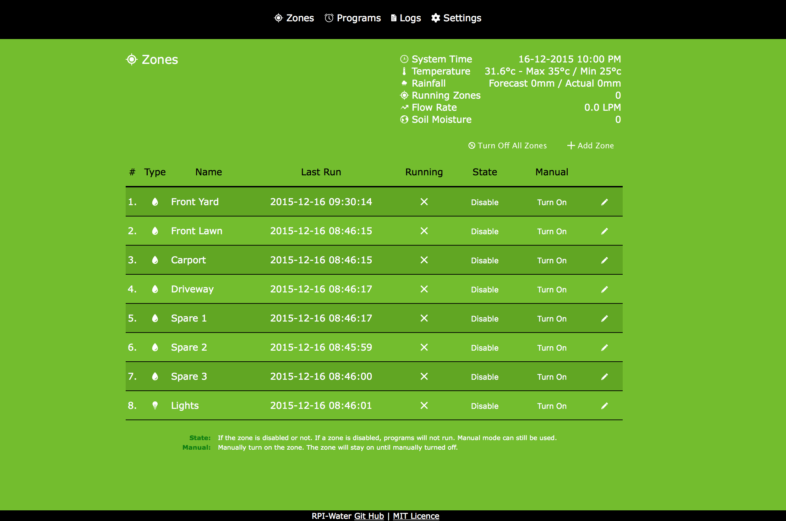
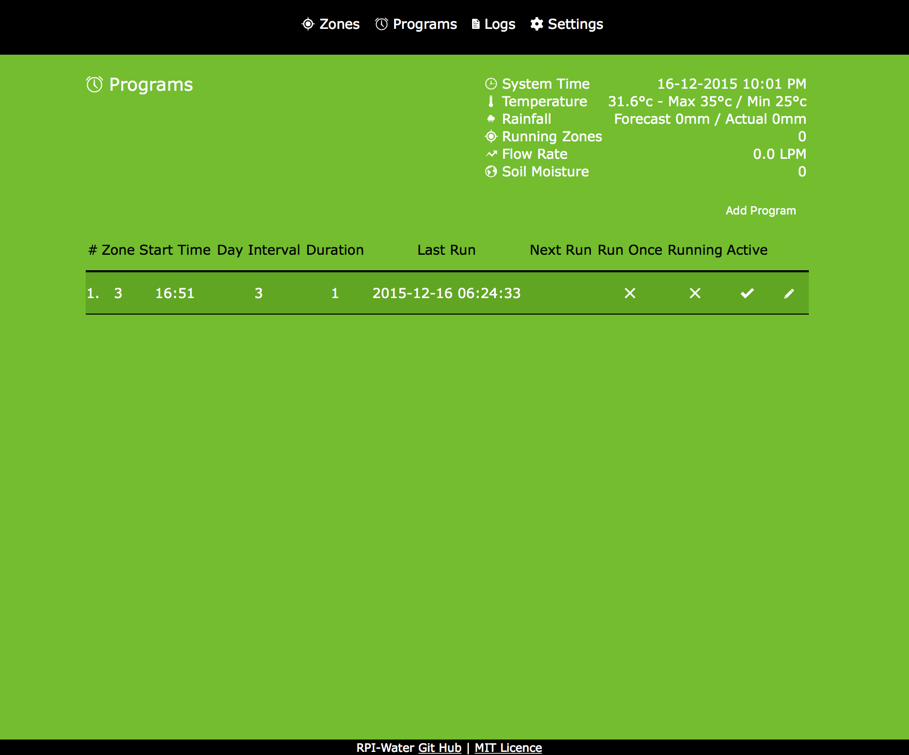

rpi-water
Raspberry Pi Watering System - www.jcroucher.com
** This is work in progress! Many features do not work yet. **
This software is designed to drive a hardware watering system based around the Raspberry Pi
Getting Started
Make sure you have the following components installed
$ sudo apt-get install python3 python3-pip python3-rpi.gpio $ sudo pip3 install sqlite3 cherrypy jinja2
$ python3 service.py
If you have any issues with starting the app you can use
$ python3 service.py safemode
This will disable a number of things allowing you to modify settings
From your browser navigate to http://PI-IP:8080
Hardware Needed
- Raspberry Pi
- Relay Board
- Solenoid Valves
- Power supply
Optional
- Flow meter
- Buck converter
- Soil Moisture sensor
Screenshots


License
Copyright (c) 2015 John Croucher www.jcroucher.com
Licensed under the MIT license.
Icons used in this system are from http://ionicons.com. Please see the readme and license in ./public/icons for more details